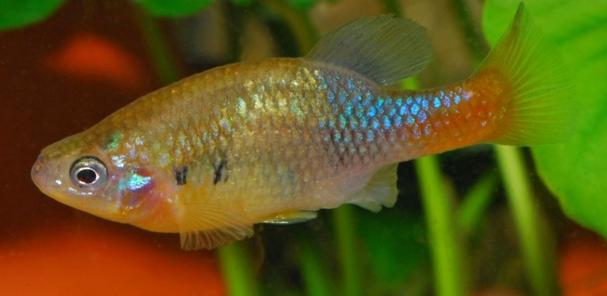

Systématique
- Ordre : Cyprinodontiformes
- Famille : Goodeidae
- Genre : Xenotoca
- Espèce : X. doadrioi
- Auteur : Domínguez-Domínguez et al., 2016

Xenotoca doadrioi est un goodeidé spectaculaire, longtemps considéré comme une population de Xenotoca eiseni avant d'être reconnu comme espèce distincte. Cette espèce est célèbre pour le dimorphisme chromatique éclatant des mâles, dont la coloration rouge-orangé sur la partie postérieure du corps est beaucoup plus étendue que chez ses congénères.
Le mâle atteint environ 5 à 6 cm, tandis que la femelle est plus massive et peut atteindre 7 à 8 cm. Le corps est haut, surtout chez les vieux mâles qui développent une bosse nucale. Les mâles arborent une large bande rouge-orangé vif couvrant le pédoncule caudal et une grande partie de l'arrière du corps, contrastant avec un bleu métallique intense sur la partie antérieure. La femelle est plus terne, de couleur olive à grise, avec des reflets argentés.
L'espèce est classée "En danger" (EN) par l'UICN. Sa survie dans la nature est précaire car elle est limitée à des systèmes de sources et de petits cours d'eau hautement vulnérables à la pollution et à l'assèchement. Elle est très prisée en aquariophilie de conservation pour ses couleurs exceptionnelles.
Xenotoca doadrioi est un poisson vigoureux, actif et doté d'un tempérament affirmé. C'est une espèce grégaire qui nécessite d'être maintenue en groupe pour stabiliser les interactions sociales. Les mâles paradent de manière incessante, déployant leurs nageoires pour affirmer leur dominance ou courtiser les femelles.
Ils peuvent se montrer agressifs envers des poissons plus timides ou dotés de longs voiles, il est donc recommandé de les maintenir en bac spécifique ou avec des espèces robustes. Ils occupent tous les niveaux de l'aquarium et apprécient un décor structuré avec des racines, des pierres et des plantes robustes.
Mode : Vivipare matrotrophe.
La reproduction est typique des Goodeinae. Le mâle utilise son andropodium pour la fécondation interne. Les embryons se développent dans l'ovaire et sont nourris via des trophotaeniae. La gestation dure entre 55 et 65 jours.
Les portées sont généralement de 15 à 30 alevins. Les nouveau-nés sont de grande taille (environ 15 mm) et présentent déjà une silhouette robuste. Ils sont capables de manger des nauplies d'artémias ou de la nourriture fine dès la naissance. Bien que les parents puissent occasionnellement chasser les alevins, un bac bien planté permet de maintenir une population sans séparation.
Dimorphisme sexuel : Très marqué. Le mâle est plus petit, possède un andropodium et des couleurs rouge et bleu éclatantes. La femelle est plus grande, plus ronde et de couleur olivâtre.
Espérance de vie : 3 à 5 ans en aquarium.
L'espèce est endémique de l'État de Jalisco au Mexique, principalement dans les bassins endoréiques d'Etzatlán et de la Laguna de Magdalena. On la trouve dans des sources claires (ojos de agua) et des ruisseaux à courant lent.
L'eau y est typiquement alcaline et dure. Les températures varient selon les saisons mais restent modérées (18-24°C). La présence de végétation aquatique est importante, tout comme les zones de détritus organiques où ils trouvent une partie de leur nourriture.
Répartition

Origine naturelle :
- Mexique : État de Jalisco (San Marcos, Etzatlán, Magdalena).
- Limité à quelques systèmes de sources isolés.
- Endémique de cette région précise du plateau central.
La souche "San Marcos" est la plus célèbre en aquariophilie pour l'intensité du rouge chez les mâles. Les populations sauvages subissent une forte pression due à l'agriculture.
Paramètres de maintenance
Température : 18 à 24 °C. Éviter les chaleurs excessives.
pH : 7,0 à 8,2.
GH : 10 à 25 °dGH.
Courant : Faible à modéré.
Volume conseillé : 100 L pour un groupe de 6 à 8 individus.
Régime alimentaire
Régime : Omnivore à tendance algivore.
En aquarium, il est très gourmand. Il accepte les nourritures sèches, mais une part végétale importante (spiruline, algues) est indispensable. Il doit aussi recevoir des proies congelées ou vivantes pour maintenir son métabolisme et sa coloration.